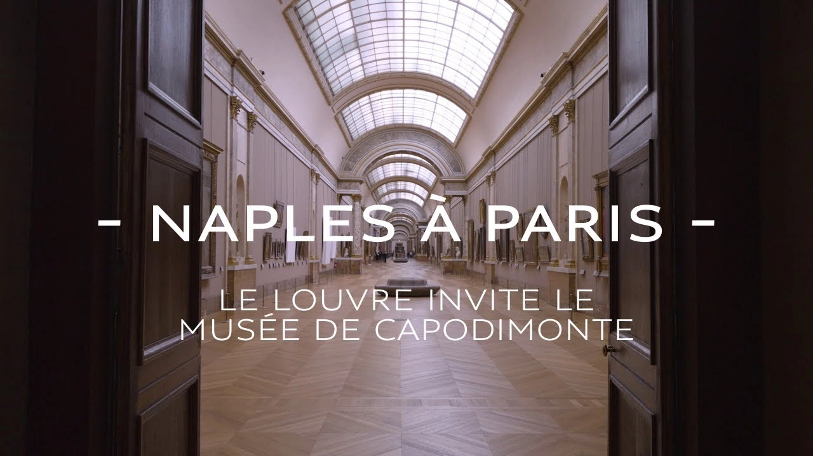
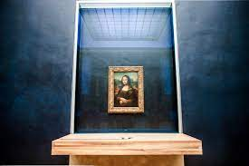

Nápoles en París

El Louvre invita al museo de Capodimonte
07/06/2023-08/01/2024
Lugar de la Exposición:
Ala Denon: salón Cuadrado y Gran Galería
Ala Sully: sala de la Capilla
EN ESPECIAL COLABORACIÓN CON EL MUSEO DE CAPODIMONTE
En 2023, el Louvre llevará a cabo una colaboración de envergadura inédita con el Museo de Capodimonte,
reafirmando así la importancia de la colaboración entre las instituciones museísticas europeas.
Exposición "Leonardo da Vinci"

Esta sección de la exposición presenta muchos de los inventos y diseños de Leonardo da Vinci
relacionados
con el espacio, incluyendo sus estudios sobre la propulsión de cohetes, sus diseños de máquinas
voladoras y
sus dibujos de una Luna con cráteres y montañas. También hay una réplica de tamaño completo del
helicóptero
aéreo de Leonardo, que se cree que fue uno de los primeros diseños de un helicóptero en la historia.